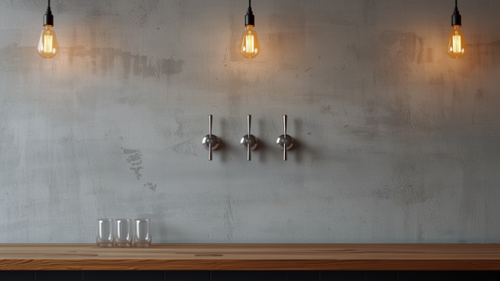
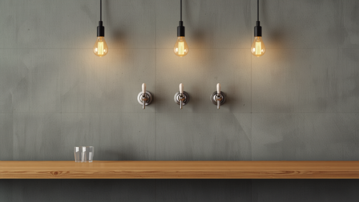

常設6タップ
国内ブリュワリーを中心に、海外のビールも。その日の顔ぶれはInstagramでご紹介しています。
CRAFT BEER BAR — FUJIMINO
グレーの壁と、六つのタップ。
ふじみ野駅東口から歩いて約10分のクラフトビアバーです。
平日 17:00–23:00／土日祝 15:00–｜火曜定休
※画像はイメージです
ABOUT
2021年の春に開いた、コンクリート打ちっぱなしの壁の小さなビアバー。店名の「Grau（グラウ）」はドイツ語で「グレー」——この壁の色から名付けられました。常設6タップは国内のブリュワリーを中心に、その時々で中身が入れ替わります。
「明るくてやさしい雰囲気のご主人」——地域の紹介記事でも、そう書かれるお店です。ひとりでゆっくり一杯にも、なごやかなおしゃべりにも。

グラスごとに、色のちがう一杯を。
※画像はイメージです
SHOP INFO
| 店名 | Grau Craft beer bar（グラウ） |
|---|---|
| 住所 | 埼玉県ふじみ野市苗間372-9 |
| アクセス | 東武東上線 ふじみ野駅 東口 徒歩約10分 |
| 営業時間 | 月〜金 17:00〜23:00／土 15:00〜23:00／日祝 15:00〜22:00 |
| 定休日 | 火曜 |
| 電話 | 049-293-3441 |
CONTACT
ご連絡・ご質問は、お電話またはInstagramのDMへお気軽にどうぞ。本日のタップはInstagramで発信しています。